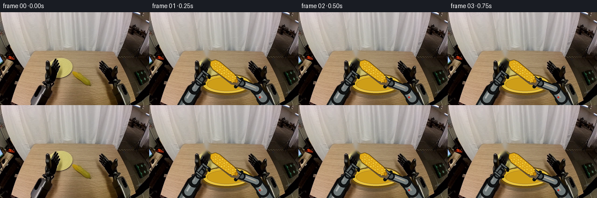
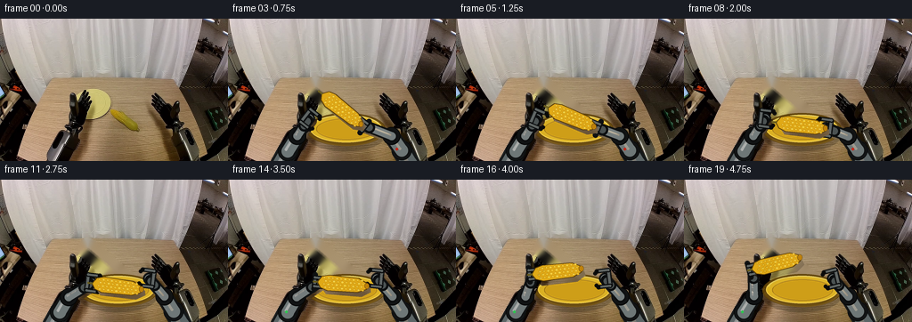
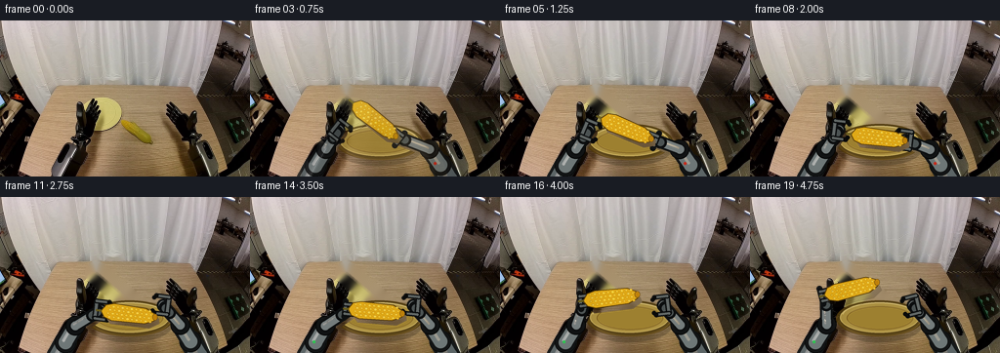
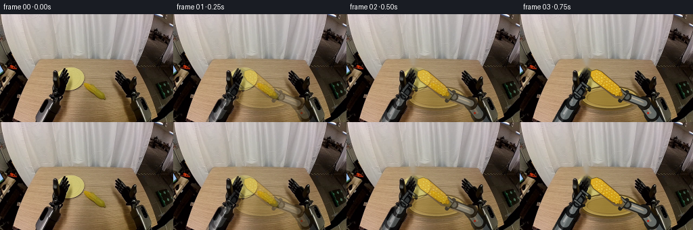

CODING AGENTS AS PIXEL WORLD MODELS
traex/GPT-5.6-Sol · common50_0037
点击播放 · 原生 RGB 像素
逐轮保存的候选
回放视频、检查图与代码变化。
每份候选均可单独播放。实际图片检查记录在下方工具轨迹中。
候选 01播放与检查图
点击播放 · 原生 RGB 像素

展开代码变化
--- 上一保存版本
+++ 本次保存版本
@@ -0,0 +1,197 @@
+from pathlib import Path
+import math
+import cv2
+import numpy as np
+from PIL import Image, ImageDraw, ImageFilter
+import artifact_io
+
+CASE_DIR = Path(__file__).resolve().parent
+W, H, SS = 256, 160, 4
+
+def smoothstep(x):
+ x = max(0.0, min(1.0, float(x)))
+ return x*x*(3.0-2.0*x)
+
+def lerp(a,b,t):
+ t=smoothstep(t)
+ return tuple(float(a[i])*(1-t)+float(b[i])*t for i in range(len(a)))
+
+def P(p): return tuple(int(round(v*SS)) for v in p)
+def pts(ps): return [P(p) for p in ps]
+
+def line(draw, xy, fill, width, joint='curve'):
+ draw.line(pts(xy), fill=fill, width=max(1,int(width*SS)), joint=joint)
+ # PIL's line ends are not consistently rounded, so add caps.
+ r=width*SS/2
+ for q in (P(xy[0]),P(xy[-1])):
+ draw.ellipse((int(q[0]-r),int(q[1]-r),int(q[0]+r),int(q[1]+r)),fill=fill)
+
+def ellipse(draw, box, fill, outline=None, width=1):
+ draw.ellipse(tuple(int(v*SS) for v in box),fill=fill,outline=outline,width=max(1,int(width*SS)))
+
+def polygon(draw, xy, fill, outline=None, width=1):
+ draw.polygon(pts(xy),fill=fill)
+ if outline:
+ draw.line(pts(list(xy)+[xy[0]]),fill=outline,width=max(1,int(width*SS)),joint='curve')
+
+def vec(angle):
+ a=math.radians(angle); return np.array([math.cos(a),math.sin(a)],dtype=float)
+
+def draw_plate(draw):
+ # A warm ceramic plate, viewed obliquely on the tabletop.
+ ellipse(draw,(87,112,177,149),(18,12,5,62))
+ ellipse(draw,(88,106,177,143),(102,72,8,220),(92,64,7,245),1.2)
+ ellipse(draw,(92,108,173,139),(224,181,35,245),(255,220,83,235),1.0)
+ ellipse(draw,(99,112,167,136),(206,158,24,255),(173,123,9,180),0.8)
+ # Soft specular arc and a darker near rim.
+ draw.arc(tuple(int(v*SS) for v in (94,108,171,137)),190*16,342*16,fill=(255,232,107,210),width=SS)
+ draw.arc(tuple(int(v*SS) for v in (91,107,175,143)),10*16,168*16,fill=(113,78,4,170),width=SS)
+
+def draw_arm(draw, side, target, open_amount=0.0, active=True, corn_angle=0.0):
+ target=np.array(target,dtype=float)
+ if side=='L':
+ base=np.array([59.,163.]); shoulder=np.array([67.,149.])
+ # elbow shifts only a little, preserving a rigid two-link mechanism.
+ elbow=np.array([77.5,132.]) + np.array([-.06*(target[0]-95), .08*(target[1]-115)])
+ accent=(102,129,138,255)
+ else:
+ base=np.array([204.,163.]); shoulder=np.array([195.,148.])
+ elbow=np.array([184.,132.]) + np.array([.05*(target[0]-156), .08*(target[1]-120)])
+ accent=(119,136,140,255)
+ # Cast shadows directly below each rigid link.
+ line(draw,[shoulder+(2,3),elbow+(2,3)],(7,6,5,75),19)
+ line(draw,[elbow+(2,3),target+(2,3)],(7,6,5,68),13)
+ # Rear link: dark rubber edging around a brushed alloy shell.
+ line(draw,[base,shoulder],(21,24,25,255),23)
+ line(draw,[base,shoulder],(92,101,102,255),17)
+ line(draw,[base+(-2,-1),shoulder+(-2,-1)],(164,170,168,170),4)
+ ellipse(draw,(shoulder[0]-11,shoulder[1]-11,shoulder[0]+11,shoulder[1]+11),(24,27,28,255),(8,9,9,255),1)
+ ellipse(draw,(shoulder[0]-7,shoulder[1]-7,shoulder[0]+7,shoulder[1]+7),(118,126,126,255),(184,188,184,220),1)
+ # Forearm links.
+ line(draw,[shoulder,elbow],(17,19,20,255),19)
+ line(draw,[shoulder,elbow],(110,119,119,255),14)
+ line(draw,[shoulder+(-2,-2),elbow+(-2,-2)],(196,201,198,180),3)
+ ellipse(draw,(elbow[0]-10,elbow[1]-10,elbow[0]+10,elbow[1]+10),(17,19,20,255),(5,6,6,255),1)
+ ellipse(draw,(elbow[0]-6.2,elbow[1]-6.2,elbow[0]+6.2,elbow[1]+6.2),accent,(183,192,191,220),1)
+ line(draw,[elbow,target],(13,15,16,255),13)
+ line(draw,[elbow,target],(116,124,124,255),9)
+ line(draw,[elbow+(-1.5,-1.5),target+(-1.5,-1.5)],(204,208,203,150),2)
+ # Wrist cuff.
+ d=target-elbow; d/=max(1,np.linalg.norm(d)); n=np.array([-d[1],d[0]])
+ wrist=target-d*6
+ line(draw,[wrist-d*4,wrist+d*3],(12,14,15,255),13)
+ line(draw,[wrist-d*4,wrist+d*2],(75,82,82,255),8)
+ # Parallel two-finger gripper. Jaws are aligned with the cob's long axis.
+ u=vec(corn_angle)
+ if side=='R': u=-u
+ v=np.array([-u[1],u[0]])
+ gap=5.0+4.0*open_amount
+ palm=target-u*5
+ line(draw,[palm-v*8,palm+v*8],(14,16,17,255),6)
+ line(draw,[palm-v*6,palm+v*6],(96,102,101,255),3)
+ for s in (-1,1):
+ root=palm+v*(gap*s)
+ tip=target+u*8+v*(gap*s)
+ line(draw,[root,tip],(10,12,13,255),5)
+ line(draw,[root,tip],(95,101,99,255),2.5)
+ # black compliant fingertip turns inward around the corn
+ bend=tip-v*(2.2*s)+u*2
+ line(draw,[tip,bend],(8,9,9,255),4.2)
+
+def draw_corn(draw, center, angle, lifted=0.0):
+ c=np.array(center,dtype=float); u=vec(angle); v=np.array([-u[1],u[0]])
+ # Contact shadow follows the cob but remains on the plate.
+ shadow_c=c+np.array([2.5,4.5+2.0*lifted])
+ p=[]
+ for x,y in [(-28,0),(-22,-8),(17,-9),(28,-3),(29,2),(19,8),(-21,8)]: p.append(shadow_c+u*x+v*y)
+ polygon(draw,p,(25,15,3,int(80-25*lifted)))
+ # Tapered rigid cob body.
+ p=[]
+ for x,y in [(-29,0),(-24,-7),(-16,-9),(17,-8),(27,-3),(29,0),(26,4),(17,8),(-17,9),(-25,6)]: p.append(c+u*x+v*y)
+ polygon(draw,p,(224,169,22,255),(88,59,4,255),1.0)
+ # Rows of individually lit kernels, staggered like a real ear of corn.
+ rows=[-5.4,-1.8,1.8,5.4]
+ for ri,yy in enumerate(rows):
+ for j,xx in enumerate(np.linspace(-21,21,10)):
+ x=xx+(1.6 if ri%2 else 0)
+ # naturally taper kernel size at the tips
+ rr=1.65*(1-.18*abs(x)/23)
+ q=c+u*x+v*yy
+ col=(250,204+(j%3)*3,48+(ri%2)*7,255) if (j+ri)%2 else (238,184,25,255)
+ ellipse(draw,(q[0]-rr,q[1]-rr*.82,q[0]+rr,q[1]+rr*.82),col,(172,116,8,215),.35)
+ # pinpoint highlight at upper left gives volume without flicker
+ ellipse(draw,(q[0]-.75,q[1]-.70,q[0]+.05,q[1]+.05),(255,235,114,190))
+ # End caps and a tiny dried stem.
+ q=c+u*27
+ ellipse(draw,(q[0]-2.7,q[1]-3.3,q[0]+2.7,q[1]+3.3),(190,129,10,255),(105,68,3,230),.5)
+ q2=c-u*28
+ line(draw,[q2-u*1,q2-u*5],(103,91,30,255),2.3)
+
+def positions(f):
+ initial=(128.,102.); plated=(132.,120.); final=(104.,94.)
+ if f<=3:
+ c=initial; ang=38.; phase='right_hold'
+ elif f<=7:
+ t=(f-3)/4; c=lerp(initial,plated,t); ang=38*(1-smoothstep(t))+7*smoothstep(t); phase='right_hold'
+ elif f<=12:
+ c=plated; ang=7.; phase='plate'
+ else:
+ if f==13: c=plated; ang=7.
+ else:
+ t=(f-13)/5; c=lerp(plated,final,t); ang=7*(1-smoothstep(t))-14*smoothstep(t)
+ phase='left_hold'
+ return np.array(c),ang,phase
+
+def render_frame(bg, cleaned, f):
+ if f==0: return bg.copy()
+ c,ang,phase=positions(f)
+ # Start from a clean, absolutely fixed camera view.
+ base=cleaned.copy()
+ layer=Image.new('RGBA',(W*SS,H*SS),(0,0,0,0)); d=ImageDraw.Draw(layer,'RGBA')
+ draw_plate(d)
+ u=vec(ang)
+ left_end=c-u*27; right_end=c+u*27
+ # Right arm: holds, deposits, opens, then withdraws toward its home side.
+ if f<=7:
+ rt=right_end
+ ropen=0.0
+ else:
+ tr=smoothstep(min(1,(f-7)/4))
+ rt=np.array(lerp(tuple(right_end), (167.,111.),tr))
+ ropen=1.0
+ # Left arm waits clear of the plate, approaches after the right gripper opens,
+ # then remains locked to the left end while lifting.
+ wait=np.array([91.,112.])
+ if f<=8:
+ lt=wait; lopen=1.0
+ elif f<=12:
+ tr=(f-8)/4
+ lt=np.array(lerp(tuple(wait),tuple(left_end),tr)); lopen=1.0
+ else:
+ lt=left_end; lopen=0.0
+ draw_arm(d,'L',lt,lopen,active=f>=9,corn_angle=ang)
+ draw_arm(d,'R',rt,ropen,active=f<=8,corn_angle=ang)
+ lifted=0 if phase!='left_hold' else min(1,max(0,(f-13)/5))
+ draw_corn(d,c,ang,lifted)
+ # Red status LEDs provide stable arm identity and a subtle task-state cue.
+ if f<=8: ellipse(d,(188,145,191,148),(205,42,27,245))
+ if f>=12: ellipse(d,(64,147,67,150),(42,199,77,245))
+ layer=layer.resize((W,H),Image.Resampling.LANCZOS)
+ out=Image.alpha_composite(Image.fromarray(base).convert('RGBA'),layer).convert('RGB')
+ return np.asarray(out,dtype=np.uint8)
+
+def main():
+ src=np.asarray(Image.open(CASE_DIR/'first_frame.png').convert('RGB'),dtype=np.uint8)
+ assert src.shape==(H,W,3)
+ # Remove only the original diagonal cob; OpenCV reconstructs nearby plate/table
+ # texture. All other scene detail and both robot bases stay pixel-exact and fixed.
+ mask=np.zeros((H,W),np.uint8)
+ cv2.line(mask,(98,77),(158,128),255,21,cv2.LINE_AA)
+ # Keep cleanup local and conservative to avoid changing the surrounding workspace.
+ cleaned=cv2.inpaint(cv2.cvtColor(src,cv2.COLOR_RGB2BGR),mask,4,cv2.INPAINT_TELEA)
+ cleaned=cv2.cvtColor(cleaned,cv2.COLOR_BGR2RGB)
+ frames=np.stack([render_frame(src,cleaned,f) for f in range(20)]).astype(np.uint8)
+ assert np.array_equal(frames[0],src)
+ artifact_io.save(frames,CASE_DIR)
+
+if __name__=='__main__': main()
候选 02播放与检查图
点击播放 · 原生 RGB 像素

展开代码变化
--- 上一保存版本
+++ 本次保存版本
@@ -44,8 +44,8 @@
ellipse(draw,(92,108,173,139),(224,181,35,245),(255,220,83,235),1.0)
ellipse(draw,(99,112,167,136),(206,158,24,255),(173,123,9,180),0.8)
# Soft specular arc and a darker near rim.
- draw.arc(tuple(int(v*SS) for v in (94,108,171,137)),190*16,342*16,fill=(255,232,107,210),width=SS)
- draw.arc(tuple(int(v*SS) for v in (91,107,175,143)),10*16,168*16,fill=(113,78,4,170),width=SS)
+ draw.arc(tuple(int(v*SS) for v in (94,108,171,137)),190,342,fill=(255,232,107,210),width=SS)
+ draw.arc(tuple(int(v*SS) for v in (91,107,175,143)),10,168,fill=(113,78,4,170),width=SS)
def draw_arm(draw, side, target, open_amount=0.0, active=True, corn_angle=0.0):
target=np.array(target,dtype=float)
候选 03播放与检查图
点击播放 · 原生 RGB 像素


展开代码变化
--- 上一保存版本
+++ 本次保存版本
@@ -40,12 +40,12 @@
def draw_plate(draw):
# A warm ceramic plate, viewed obliquely on the tabletop.
ellipse(draw,(87,112,177,149),(18,12,5,62))
- ellipse(draw,(88,106,177,143),(102,72,8,220),(92,64,7,245),1.2)
- ellipse(draw,(92,108,173,139),(224,181,35,245),(255,220,83,235),1.0)
- ellipse(draw,(99,112,167,136),(206,158,24,255),(173,123,9,180),0.8)
+ ellipse(draw,(88,106,177,143),(81,61,15,220),(78,56,11,245),1.2)
+ ellipse(draw,(92,108,173,139),(171,144,63,245),(205,179,94,235),1.0)
+ ellipse(draw,(99,112,167,136),(157,128,48,255),(122,89,17,180),0.8)
# Soft specular arc and a darker near rim.
- draw.arc(tuple(int(v*SS) for v in (94,108,171,137)),190,342,fill=(255,232,107,210),width=SS)
- draw.arc(tuple(int(v*SS) for v in (91,107,175,143)),10,168,fill=(113,78,4,170),width=SS)
+ draw.arc(tuple(int(v*SS) for v in (94,108,171,137)),190,342,fill=(226,203,124,210),width=SS)
+ draw.arc(tuple(int(v*SS) for v in (91,107,175,143)),10,168,fill=(99,72,13,170),width=SS)
def draw_arm(draw, side, target, open_amount=0.0, active=True, corn_angle=0.0):
target=np.array(target,dtype=float)
@@ -177,8 +177,14 @@
if f<=8: ellipse(d,(188,145,191,148),(205,42,27,245))
if f>=12: ellipse(d,(64,147,67,150),(42,199,77,245))
layer=layer.resize((W,H),Image.Resampling.LANCZOS)
- out=Image.alpha_composite(Image.fromarray(base).convert('RGBA'),layer).convert('RGB')
- return np.asarray(out,dtype=np.uint8)
+ out=np.asarray(Image.alpha_composite(Image.fromarray(base).convert('RGBA'),layer).convert('RGB'),dtype=np.uint8)
+ # Ease away from the exact photographed first pose. This keeps the mandated
+ # frame 00 intact while avoiding a one-frame pop as the controllable geometry
+ # takes over from the pixels of the original objects.
+ if f <= 3:
+ alpha=(.34,.61,.84)[f-1]
+ out=np.clip(bg.astype(np.float32)*(1-alpha)+out.astype(np.float32)*alpha+.5,0,255).astype(np.uint8)
+ return out
def main():
src=np.asarray(Image.open(CASE_DIR/'first_frame.png').convert('RGB'),dtype=np.uint8)
可观测工具轨迹
实际执行的命令与返回图片。
命令 1exit 0
/bin/bash -lc "cat GENERATION_RULES.md && printf '\\n---PROMPT---\\n' && cat prompt.txt"
命令 2exit 0
/bin/bash -lc "find . -maxdepth 2 -type f -printf '%p\\n' | sort && printf '\\n---TOOLS---\\n' && command -v ffmpeg || true && python3 - <<'PY' import importlib.util for x in ['PIL','numpy','cv2','imageio','scipy']: print(x, bool(importlib.util.find_spec(x))) PY"
命令 3exit 0
/bin/bash -lc "cat task_spec.json && sed -n '1,240p' artifact_io.py"
命令 4exit 0
/bin/bash -lc "python3 - <<'PY'
from PIL import Image
import numpy as np
im=np.array(Image.open('first_frame.png').convert('RGB'))
print(im.shape, im.dtype, im.min(), im.max())
# quantized dominant colors
q=(im//16)*16
u,c=np.unique(q.reshape(-1,3),axis=0,return_counts=True)
for i in np.argsort(c)[-30:][::-1]: print(tuple(u[i]),int(c[i]))
# grid average 8x8 blocks hex-ish
chars=' .:-=+*#%@'
g=np.mean(im,2)
for y in range(0,160,5):
print(''.join(chars[min(9,int(g[y:y+5,x:x+4].mean()/25.6))] for x in range(0,256,4)))
PY"命令 5exit 0
/bin/bash -lc "python3 - <<'PY'
import cv2,numpy as np
im=cv2.imread('first_frame.png'); hsv=cv2.cvtColor(im,cv2.COLOR_BGR2HSV)
for name,lo,hi in [('yellow',(18,80,80),(40,255,255)),('brightyellow',(20,130,130),(38,255,255)),('red',(0,80,60),(12,255,255)),('blue',(90,60,50),(130,255,255)),('dark',(0,0,0),(180,255,50)),('white',(0,0,180),(180,60,255)),('skinwood',(5,40,70),(25,200,240))]:
m=cv2.inRange(hsv,np.array(lo),np.array(hi))
n,l,st,c=cv2.connectedComponentsWithStats(m)
print('\\n',name,'total',np.sum(m>0))
for i in np.argsort(st[1:,4])[-15:][::-1]+1:
x,y,w,h,a=st[i];
if a>=5:print((x,y,w,h,a),tuple(np.round(c[i],1)))
# color sample patches grid average RGB, std
rgb=im[:,:,::-1]
for y in range(0,160,20):
print('Y',y, ['%d,%d,%d'%tuple(rgb[y:y+20,x:x+32].mean((0,1)).astype(int)) for x in range(0,256,32)])
PY"命令 6exit 0
/bin/bash -lc "python3 - <<'PY'
import cv2,numpy as np
im=cv2.imread('first_frame.png')[:,:,::-1]
r,g,b=im.transpose(2,0,1).astype(float)
metrics={'yellow':np.minimum(r,g)-b-.15*np.abs(r-g),'bright yellow':np.minimum(r,g)-b+.2*(r+g),'metal bright':r+g+b-2*np.maximum.reduce([r,g,b])}
for name,z in metrics.items():
print('\\n---',name, 'range',z.min(),z.max(),'---')
# block max threshold/ascii at 2x4 resolution
if name=='yellow':th=75
elif name=='bright yellow':th=220
else:th=0
m=z>th
for y in range(0,160,4):
print(''.join('#' if m[y:y+4,x:x+4].mean()>.45 else '+' if m[y:y+4,x:x+4].any() else ' ' for x in range(0,256,4)))
PY"命令 7exit 0
/bin/bash -lc "python3 - <<'PY'
import cv2,numpy as np
im=cv2.imread('first_frame.png')
g=cv2.cvtColor(im,cv2.COLOR_BGR2GRAY)
e=cv2.Canny(g,60,140)
# use 2x2 edge fraction, print high-density
for y in range(0,160,2):
print(''.join('#' if e[y:y+2,x:x+2].sum()>510 else '+' if e[y:y+2,x:x+2].any() else ' ' for x in range(0,256,2)))
PY"命令 8exit 0
/bin/bash -lc "python3 - <<'PY'
import cv2,numpy as np
im=cv2.imread('first_frame.png')[:,:,::-1]; hsv=cv2.cvtColor(im[:,:,::-1],cv2.COLOR_BGR2HSV)
H,S,V=cv2.split(hsv)
# center region 0-256 x 45-160, 2x2 classify by median/majority custom
for y in range(40,160,2):
out=''
for x in range(0,256,2):
h=np.median(H[y:y+2,x:x+2]); s=np.median(S[y:y+2,x:x+2]);v=np.median(V[y:y+2,x:x+2])
if v<35:c='K'
elif v<65:c='k'
elif 18<=h<=38 and s>115 and v>115:c='Y'
elif 15<=h<=40 and s>55 and v>80:c='y'
elif s<25 and v>190:c='W'
elif s<35 and v>130:c='w'
elif h<14 and s>80:c='R'
elif h<25 and s>50:c='b' # brown
elif v<95:c='d'
elif s<30:c='n'
else:c='.'
out+=c
print(f'{y:03}',out)
PY"命令 9exit 0
/bin/bash -lc "python3 - <<'PY'
from PIL import Image
import numpy as np
im=np.array(Image.open('first_frame.png')).astype(float);r,g,b=im.transpose(2,0,1)
z=np.minimum(r,g)-b-.15*np.abs(r-g)
for th in [45,65,80,95]:
print('\\nTH',th)
for y in range(60,135):
xs=np.where(z[y]>th)[0]
# groups
gr=[]
for a in xs:
if not gr or a>gr[-1][-1]+1:gr.append([a])
else:gr[-1].append(a)
if gr: print(y,[(q[0],q[-1]) for q in gr if len(q)>=2])
PY"命令 10exit 0
/bin/bash -lc "python3 - <<'PY'
from PIL import Image
import numpy as np,cv2
im=np.array(Image.open('first_frame.png')); hsv=cv2.cvtColor(im,cv2.COLOR_RGB2HSV)
for name,box in [('A',(90,75,125,115)),('B',(120,98,158,130)),('center',(80,66,191,160)),('Lrobot',(55,75,105,160)),('Rrobot',(165,75,218,160)),('table',(105,125,165,160))]:
x1,y1,x2,y2=box;a=im[y1:y2,x1:x2];h=hsv[y1:y2,x1:x2]
print(name,'rgb',a.mean((0,1)), 'hsv',h.mean((0,1)), 'sat>100',np.mean(h[:,:,1]>100),'yellow-hi',np.mean((h[:,:,0]>18)&(h[:,:,0]<39)&(h[:,:,1]>100)))
# values on yellow metric shape, rows ranges and average RGB each run
r,g,b=im.transpose(2,0,1).astype(float);z=np.minimum(r,g)-b-.15*np.abs(r-g)
for y in range(75,128):
m=z[y]>45; n,l,st,c=cv2.connectedComponentsWithStats(m.astype('uint8'))
runs=[]
for x,w,a in zip(st[1:,0],st[1:,2],st[1:,4]):
if a>=2:
rgb=np.mean(im[y,x:x+w],0).astype(int);runs.append((int(x),int(x+w-1),tuple(rgb)))
if runs: print(y,runs)
PY"命令 11exit 0
/bin/bash -lc "python3 - <<'PY'
import cv2,numpy as np
im=cv2.imread('first_frame.png'); hsv=cv2.cvtColor(im,cv2.COLOR_BGR2HSV); v=hsv[:,:,2]
for th in [35,55,75,95]:
print('\\nTH',th)
m=v<th
for y in range(60,160,2):
# occupancy each 4 pixels, only center 40:230
s=''
for x in range(40,232,4):
q=m[y:y+2,x:x+4].mean();s += '#' if q>.6 else '+' if q>.15 else ' '
print(f'{y:03}',s)
PY"命令 12exit 0
/bin/bash -lc "cat > generate.py <<'PY'
from pathlib import Path
import math
import cv2
import numpy as np
from PIL import Image, ImageDraw, ImageFilter
import artifact_io
CASE_DIR = Path(__file__).resolve().parent
W, H, SS = 256, 160, 4
def smoothstep(x):
x = max(0.0, min(1.0, float(x)))
return x*x*(3.0-2.0*x)
def lerp(a,b,t):
t=smoothstep(t)
return tuple(float(a[i])*(1-t)+float(b[i])*t for i in range(len(a)))
def P(p): return tuple(int(round(v*SS)) for v in p)
def pts(ps): return [P(p) for p in ps]
def line(draw, xy, fill, width, joint='curve'):
draw.line(pts(xy), fill=fill, width=max(1,int(width*SS)), joint=joint)
# PIL's line ends are not consistently rounded, so add caps.
r=width*SS/2
for q in (P(xy[0]),P(xy[-1])):
draw.ellipse((int(q[0]-r),int(q[1]-r),int(q[0]+r),int(q[1]+r)),fill=fill)
def ellipse(draw, box, fill, outline=None, width=1):
draw.ellipse(tuple(int(v*SS) for v in box),fill=fill,outline=outline,width=max(1,int(width*SS)))
def polygon(draw, xy, fill, outline=None, width=1):
draw.polygon(pts(xy),fill=fill)
if outline:
draw.line(pts(list(xy)+[xy[0]]),fill=outline,width=max(1,int(width*SS)),joint='curve')
def vec(angle):
a=math.radians(angle); return np.array([math.cos(a),math.sin(a)],dtype=float)
def draw_plate(draw):
# A warm ceramic plate, viewed obliquely on the tabletop.
ellipse(draw,(87,112,177,149),(18,12,5,62))
ellipse(draw,(88,106,177,143),(102,72,8,220),(92,64,7,245),1.2)
ellipse(draw,(92,108,173,139),(224,181,35,245),(255,220,83,235),1.0)
ellipse(draw,(99,112,167,136),(206,158,24,255),(173,123,9,180),0.8)
# Soft specular arc and a darker near rim.
draw.arc(tuple(int(v*SS) for v in (94,108,171,137)),190*16,342*16,fill=(255,232,107,210),width=SS)
draw.arc(tuple(int(v*SS) for v in (91,107,175,143)),10*16,168*16,fill=(113,78,4,170),width=SS)
def draw_arm(draw, side, target, open_amount=0.0, active=True, corn_angle=0.0):
target=np.array(target,dtype=float)
if side=='L':
base=np.array([59.,163.]); shoulder=np.array([67.,149.])
# elbow shifts only a little, preserving a rigid two-link mechanism.
elbow=np.array([77.5,132.]) + np.array([-.06*(target[0]-95), .08*(target[1]-115)])
accent=(102,129,138,255)
else:
base=np.array([204.,163.]); shoulder=np.array([195.,148.])
elbow=np.array([184.,132.]) + np.array([.05*(target[0]-156), .08*(target[1]-120)])
accent=(119,136,140,255)
# Cast shadows directly below each rigid link.
line(draw,[shoulder+(2,3),elbow+(2,3)],(7,6,5,75),19)
line(draw,[elbow+(2,3),target+(2,3)],(7,6,5,68),13)
# Rear link: dark rubber edging around a brushed alloy shell.
line(draw,[base,shoulder],(21,24,25,255),23)
line(draw,[base,shoulder],(92,101,102,255),17)
line(draw,[base+(-2,-1),shoulder+(-2,-1)],(164,170,168,170),4)
ellipse(draw,(shoulder[0]-11,shoulder[1]-11,shoulder[0]+11,shoulder[1]+11),(24,27,28,255),(8,9,9,255),1)
ellipse(draw,(shoulder[0]-7,shoulder[1]-7,shoulder[0]+7,shoulder[1]+7),(118,126,126,255),(184,188,184,220),1)
# Forearm links.
line(draw,[shoulder,elbow],(17,19,20,255),19)
line(draw,[shoulder,elbow],(110,119,119,255),14)
line(draw,[shoulder+(-2,-2),elbow+(-2,-2)],(196,201,198,180),3)
ellipse(draw,(elbow[0]-10,elbow[1]-10,elbow[0]+10,elbow[1]+10),(17,19,20,255),(5,6,6,255),1)
ellipse(draw,(elbow[0]-6.2,elbow[1]-6.2,elbow[0]+6.2,elbow[1]+6.2),accent,(183,192,191,220),1)
line(draw,[elbow,target],(13,15,16,255),13)
line(draw,[elbow,target],(116,124,124,255),9)
line(draw,[elbow+(-1.5,-1.5),target+(-1.5,-1.5)],(204,208,203,150),2)
# Wrist cuff.
d=target-elbow; d/=max(1,np.linalg.norm(d)); n=np.array([-d[1],d[0]])
wrist=target-d*6
line(draw,[wrist-d*4,wrist+d*3],(12,14,15,255),13)
line(draw,[wrist-d*4,wrist+d*2],(75,82,82,255),8)
# Parallel two-finger gripper. Jaws are aligned with the cob's long axis.
u=vec(corn_angle)
if side=='R': u=-u
v=np.array([-u[1],u[0]])
gap=5.0+4.0*open_amount
palm=target-u*5
line(draw,[palm-v*8,palm+v*8],(14,16,17,255),6)
line(draw,[palm-v*6,palm+v*6],(96,102,101,255),3)
for s in (-1,1):
root=palm+v*(gap*s)
tip=target+u*8+v*(gap*s)
line(draw,[root,tip],(10,12,13,255),5)
line(draw,[root,tip],(95,101,99,255),2.5)
# black compliant fingertip turns inward around the corn
bend=tip-v*(2.2*s)+u*2
line(draw,[tip,bend],(8,9,9,255),4.2)
def draw_corn(draw, center, angle, lifted=0.0):
c=np.array(center,dtype=float); u=vec(angle); v=np.array([-u[1],u[0]])
# Contact shadow follows the cob but remains on the plate.
shadow_c=c+np.array([2.5,4.5+2.0*lifted])
p=[]
for x,y in [(-28,0),(-22,-8),(17,-9),(28,-3),(29,2),(19,8),(-21,8)]: p.append(shadow_c+u*x+v*y)
polygon(draw,p,(25,15,3,int(80-25*lifted)))
# Tapered rigid cob body.
p=[]
for x,y in [(-29,0),(-24,-7),(-16,-9),(17,-8),(27,-3),(29,0),(26,4),(17,8),(-17,9),(-25,6)]: p.append(c+u*x+v*y)
polygon(draw,p,(224,169,22,255),(88,59,4,255),1.0)
# Rows of individually lit kernels, staggered like a real ear of corn.
rows=[-5.4,-1.8,1.8,5.4]
for ri,yy in enumerate(rows):
for j,xx in enumerate(np.linspace(-21,21,10)):
x=xx+(1.6 if ri%2 else 0)
# naturally taper kernel size at the tips
rr=1.65*(1-.18*abs(x)/23)
q=c+u*x+v*yy
col=(250,204+(j%3)*3,48+(ri%2)*7,255) if (j+ri)%2 else (238,184,25,255)
ellipse(draw,(q[0]-rr,q[1]-rr*.82,q[0]+rr,q[1]+rr*.82),col,(172,116,8,215),.35)
# pinpoint highlight at upper left gives volume without flicker
ellipse(draw,(q[0]-.75,q[1]-.70,q[0]+.05,q[1]+.05),(255,235,114,190))
# End caps and a tiny dried stem.
q=c+u*27
ellipse(draw,(q[0]-2.7,q[1]-3.3,q[0]+2.7,q[1]+3.3),(190,129,10,255),(105,68,3,230),.5)
q2=c-u*28
line(draw,[q2-u*1,q2-u*5],(103,91,30,255),2.3)
def positions(f):
initial=(128.,102.); plated=(132.,120.); final=(104.,94.)
if f<=3:
c=initial; ang=38.; phase='right_hold'
elif f<=7:
t=(f-3)/4; c=lerp(initial,plated,t); ang=38*(1-smoothstep(t))+7*smoothstep(t); phase='right_hold'
elif f<=12:
c=plated; ang=7.; phase='plate'
else:
if f==13: c=plated; ang=7.
else:
t=(f-13)/5; c=lerp(plated,final,t); ang=7*(1-smoothstep(t))-14*smoothstep(t)
phase='left_hold'
return np.array(c),ang,phase
def render_frame(bg, cleaned, f):
if f==0: return bg.copy()
c,ang,phase=positions(f)
# Start from a clean, absolutely fixed camera view.
base=cleaned.copy()
layer=Image.new('RGBA',(W*SS,H*SS),(0,0,0,0)); d=ImageDraw.Draw(layer,'RGBA')
draw_plate(d)
u=vec(ang)
left_end=c-u*27; right_end=c+u*27
# Right arm: holds, deposits, opens, then withdraws toward its home side.
if f<=7:
rt=right_end
ropen=0.0
else:
tr=smoothstep(min(1,(f-7)/4))
rt=np.array(lerp(tuple(right_end), (167.,111.),tr))
ropen=1.0
# Left arm waits clear of the plate, approaches after the right gripper opens,
# then remains locked to the left end while lifting.
wait=np.array([91.,112.])
if f<=8:
lt=wait; lopen=1.0
elif f<=12:
tr=(f-8)/4
lt=np.array(lerp(tuple(wait),tuple(left_end),tr)); lopen=1.0
else:
lt=left_end; lopen=0.0
draw_arm(d,'L',lt,lopen,active=f>=9,corn_angle=ang)
draw_arm(d,'R',rt,ropen,active=f<=8,corn_angle=ang)
lifted=0 if phase"'!='"'left_hold' else min(1,max(0,(f-13)/5))
draw_corn(d,c,ang,lifted)
# Red status LEDs provide stable arm identity and a subtle task-state cue.
if f<=8: ellipse(d,(188,145,191,148),(205,42,27,245))
if f>=12: ellipse(d,(64,147,67,150),(42,199,77,245))
layer=layer.resize((W,H),Image.Resampling.LANCZOS)
out=Image.alpha_composite(Image.fromarray(base).convert('RGBA'),layer).convert('RGB')
return np.asarray(out,dtype=np.uint8)
def main():
src=np.asarray(Image.open(CASE_DIR/'first_frame.png').convert('RGB'),dtype=np.uint8)
assert src.shape==(H,W,3)
# Remove only the original diagonal cob; OpenCV reconstructs nearby plate/table
# texture. All other scene detail and both robot bases stay pixel-exact and fixed.
mask=np.zeros((H,W),np.uint8)
cv2.line(mask,(98,77),(158,128),255,21,cv2.LINE_AA)
# Keep cleanup local and conservative to avoid changing the surrounding workspace.
cleaned=cv2.inpaint(cv2.cvtColor(src,cv2.COLOR_RGB2BGR),mask,4,cv2.INPAINT_TELEA)
cleaned=cv2.cvtColor(cleaned,cv2.COLOR_BGR2RGB)
frames=np.stack([render_frame(src,cleaned,f) for f in range(20)]).astype(np.uint8)
assert np.array_equal(frames[0],src)
artifact_io.save(frames,CASE_DIR)
if __name__=='__main__': main()
PY
python3 generate.py
python3 - <<'PY'
import numpy as np
from PIL import Image
p=np.load('pixels.npz')['pixels']; print('pixels',p.shape,p.dtype)
a=np.array(Image.open('first_frame.png')); b=np.array(Image.open('frames/00.png')); print('frame0 exact',np.array_equal(a,b))
fr=np.stack([np.array(Image.open(f'frames/{i:02d}.png')) for i in range(20)])
print('shape',fr.shape,fr.dtype,'successive MAD',np.round(np.abs(np.diff(fr.astype(float),axis=0)).mean((1,2,3)),2))
print('changed fraction from f0',np.round(np.mean(fr"'!=fr[0],axis=(1,2,3)),3))
PY'命令 13exit 0
/bin/bash -lc "python3 generate.py && python3 - <<'PY'
# Numerical storyboard inspection: yellow-object centroid and dark arm endpoints.
from PIL import Image
import numpy as np, cv2, os
for f in [0,1,3,4,7,8,10,12,13,15,18,19]:
a=np.array(Image.open(f'frames/{f:02d}.png'))
hsv=cv2.cvtColor(a,cv2.COLOR_RGB2HSV)
m=(hsv[:,:,0]>=18)&(hsv[:,:,0]<=38)&(hsv[:,:,1]>145)&(hsv[:,:,2]>155)
ys,xs=np.where(m & (np.indices(m.shape)[0]>65))
print(f, 'yellow_px',len(xs),'centroid', (round(xs.mean(),1),round(ys.mean(),1)) if len(xs) else None)
print('outputs',[(x,os.path.getsize(x)) for x in ['pixels.npz','index.html','inspection.png','transition_check.png']])
PY"命令 14exit 0
/bin/bash -lc "python3 generate.py && python3 - <<'PY'
from PIL import Image
import numpy as np
fr=np.stack([np.array(Image.open(f'frames/{i:02d}.png')) for i in range(20)])
print('frame0 exact',np.array_equal(fr[0],np.array(Image.open('first_frame.png'))))
print('successive MAD',np.round(np.abs(np.diff(fr.astype(float),axis=0)).mean((1,2,3)),2))
assert fr.shape==(20,160,256,3) and fr.dtype==np.uint8
assert np.array_equal(fr[0],np.array(Image.open('first_frame.png').convert('RGB')))
PY
python3 -m py_compile generate.py
ls -lh generate.py pixels.npz inspection.png index.html frames/00.png frames/19.png"保存候选 3 份；完成命令 14 次；可验证图片返回 0 张。原始 API 响应与完整日志保留在本地。